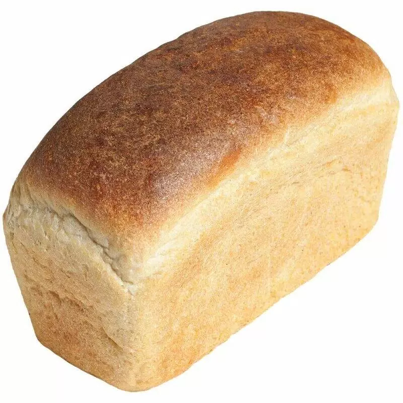
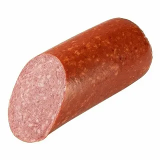
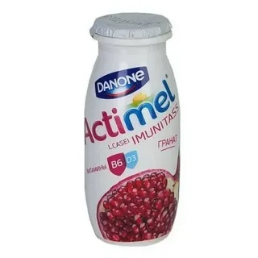

Молоко
Молоко — это питательная жидкость, которую вырабатывают молочные железы самок млекопитающих в период лактации.

Молоко — это питательная жидкость, которую вырабатывают молочные железы самок млекопитающих в период лактации.
Хлеб — пищевой продукт, получаемый выпечкой разрыхлённого теста, приготовленного из муки, воды и соли

Колбаса — это пищевой продукт, который представляет собой мясной фарш, помещённый в продолговатую оболочку

это концентрированный молочный продукт, который получают путём частичного удаления воды из коровьего молока с последующим добавлением сахара.
это пробиотический кисломолочный напиток, который производит компания Danone. Название происходит от голландского выражения «Actieve melk»
